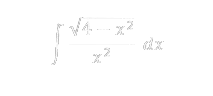
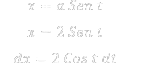
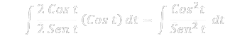
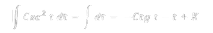

CÁLCULO INTEGRAL - INTEGRALES POR SUSTITUCION TRIGONOMETRICA
La integración por sustitución trigonométrica es una técnica utilizada para resolver integrales que contienen expresiones cuadráticas que pueden simplificarse mediante identidades trigonométricas.

Tenemos el siguiente ejemplo:

Usamos la sustitución trigonométrica x=2sint.
Entonces, dx=2cos t dt.Reemplazamos x y dx en la integral original

*Simplificamos el integrando
*Simplificamos la raíz cuadrada
*Sustituimos y simplificamos la expresión dentro de la integral
Usamos la identidad trigonométrica para simplificar la integral

Evaluamos las integrales por separado
Las integrales son:
